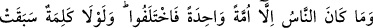
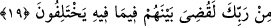

dikkat çekilmiştir. Zaten göklerde ve yerdeki varlıklardan hiçbir şey yoktur ki kendileri
gibi hâdis, Allah’ın hükmü altında ve Yüce Allah’a ortak koşulmaya lâyık olmayan bir
şey olmasın.
Kâşifî şöyle der: “İlmin olmaması bilinen (ma‘lûm) cihetindendir. Çünkü ilim,
ma‘lûma tâbîdir. Yani ey müşrik ve kâfirler siz Cenâb-ı Hakk’ın ortağı vardır
diyorsunuz. Putların şefaat edeceğini söylüyorsunuz. Cenâb-ı Hak ise bilinmeye konu
olan her şeyi bilir. Bunu bilmezsiniz. Şimdi Allah’ın ortağı olmadığı mâlum oldu.
Cenâb-ı Hak da size şefaat etmez.”
Nitekim Şeyhzâde şöyle demiştir: “Eğer öyle bir şey var olsaydı, zaten onu Allah
bilirdi. Allah’ın bilemediği bir şeyin ise varlığı mümkin değildir.”
“O, onların koştukları ortaklardan münezzeh ve yücedir.” Cenâb-ı Hakk’ın yüce
zâtını tenzih eden yine kendisi olduğu için burada “tenzih”, “teberrî” mânâsına
dönmüştür. Yani Allah Teâlâ, onların şirk koşmalarından uzak ve yücedir, demektir.
Birdir mülk içinde ona yar ve arkadaş yoktur
Kullarına O’ndan başka hâkim yoktur
19. İnsanlar sadece bir tek ümmettiler. Sonra ayrılığa düştüler. Eğer Rabb’inden
bir söz geçmemiş olsaydı, ayrılığa düştükleri konuda hemen aralarında hüküm
verilir (işleri bitirilirdi).
“İnsanlar sadece bir tek ümmettiler.” Yani Kâbil’in Hâbil’i öldürmesine kadar
Âdem (a.s.) zamanında veya Nûh (a.s.) zamanında yeryüzünde kâfirlerden bir tek kimse
kalmadığı Tufan’dan sonra insanlar bir tek din üzerine idiler. Çünkü insanlar hak din
üzere ittifak halindeydiler. “Sonra ayrılığa düştüler.” Yani mü’min ve kâfir diye
ayrıldılar.
“Eğer Rabb’inden bir söz geçmemiş olsaydı,” yani, aralarını ayırt edecek azâbın
kıyamet gününe kadar te’hirine dâir ezelî hüküm olmasaydı, -Çünkü kıyamet günü,
haklıyı haksızdan ayırma ve karşılık verme günüdür- “ayrılığa düştükleri konuda”
haklıyı bırakıp haksızı helâk etmek sûretiyle “hemen aralarında hüküm verilir” işleri
bitirilirdi.
Kâşifî şöyle der: “(Eğer azab âhirete bırakılmayıp hemen gönderilseydi) elbette
ihtilaf ettikleri hususta onlar arasında hükmedilmiş olurdu. Azab gelirdi, bâtıl olan
helak olurdu ve hak olan kalırdı.”
Âyetin şu mânâya da ihtimali vardır: İnsanlar ilk yaratıldıklarında yaratıldıkları aslî
fıtrat üzere bir tek ümmet olarak bulunuyorlardı. Anne babalarının terbiyesine göre
ayrılığa düştüler. Nitekim Peygamber (s.a.) şöyle buyurmuştur: “Her doğan fıtrat üzere